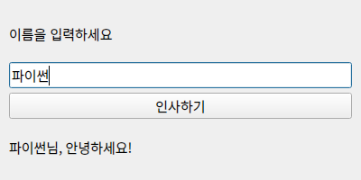

QApplication → 창·레이아웃 → connect → show → exectkinter의 Tk·pack·command·mainloop를 Qt 이름으로 옮긴 순서입니다. 단어만 바꾸기보다 역할을 옮기세요.
 인공지능 파이썬 실무
인공지능 파이썬 실무Ⅱ. GUI 프로그래밍 · 주제 07 / 11
기본 위젯으로 익힌 개념을 Qt Widgets로 옮깁니다.
대단원 Ⅱ. GUI 프로그래밍 교과서 40–59쪽
추가 실습 · 교과서 밖 확장
이 웹 주제의 연계 범위: 확장 학습
웹 학습 주제 07 / 11
기본 위젯으로 익힌 개념을 Qt Widgets로 옮깁니다.
| tkinter | PySide6 | 공통 개념 |
|---|---|---|
| Tk() | QApplication + QWidget | 앱과 창 |
| command=handler | clicked.connect(handler) | 이벤트 연결 |
| pack / grid | QVBoxLayout / QGridLayout | 배치 규칙 |
| mainloop() | app.exec() | 이벤트 루프 |
BEFORE THE CODE
새 이름·속성이 코드에 나오기 전에 짧게 봅니다. 외우기보다 역할을 먼저 구별하세요.
QApplication → 창·레이아웃 → connect → show → exectkinter의 Tk·pack·command·mainloop를 Qt 이름으로 옮긴 순서입니다. 단어만 바꾸기보다 역할을 옮기세요.
Designer가 붙인 부품 이름입니다. 화면에 보이는 text와 다릅니다. 코드는 objectName으로 찾습니다.
HISTORY / VIDEO
Qt는 1991년 노르웨이에서 시작해 1995년 공개된 C++ GUI 프레임워크입니다. PySide는 Qt 공식 파이썬 바인딩이고, 이 과정은 Qt Widgets를 사용합니다.
Learn Python GUI Development for Desktop — PySide6 and Qt Tutorial (freeCodeCamp) ↗
영어 공개 강의입니다. 설치·QWidget·시그널만 먼저 보고, Designer는 필요할 때 이어서 보세요. 학교 네트워크·연령 정책을 확인하세요.
RESULT PREVIEW

PC의 프로젝트 폴더에서 python -m venv .venv를 실행합니다. Windows PowerShell은 .venv\Scripts\Activate.ps1, macOS/Linux는 source .venv/bin/activate로 활성화합니다. 이후 python -m pip install PySide6로 설치하고 python main.py로 실행합니다. VS Code에서 같은 .venv 인터프리터를 선택하세요.
첫 예제는 함수 기반으로 QApplication → QWidget → 레이아웃 → 위젯 → connect → show → exec 순서를 익힙니다. 메모장은 QMainWindow를 상속하는 클래스로 상태와 메서드를 묶습니다. self.editor는 여러 메서드에서 같은 입력창을 사용하게 합니다.
Qt Designer는 pyside6-designer로 실행합니다. Widget 폼에 라벨·입력창·버튼을 배치하고 레이아웃을 적용한 다음 form.ui로 저장하세요. pyside6-uic form.ui -o ui_form.py로 Python 코드를 생성할 수 있습니다.
생성 파일은 다시 생성하면 덮어써집니다. 직접 작성하는 main.py에서 Ui_Form을 가져와 setupUi(window)를 호출하고 이벤트를 연결하세요. 버튼의 objectName을 확인해야 코드에서 올바른 이름으로 접근할 수 있습니다. Qt Quick/QML은 별도 UI 기술이며 이번 기본 실습은 Qt Widgets입니다.
이 페이지만 열어도 순서를 실습할 수 있습니다. 최소 창으로 QApplication → show → exec를 확인하고, 인사 앱에서 위젯과 connect를 본 뒤, form.ui를 불러 와 objectName으로 버튼을 연결하세요. Designer의 보이는 글자(text)와 코드가 찾는 이름(objectName)은 다른 속성입니다.
예제를 선택하면 바로 아래에서 코드를 수정하고 실행할 수 있습니다. 작성한 코드는 예제별로 저장됩니다.
BEFORE THE CODE
새 이름·속성이 코드에 나오기 전에 짧게 봅니다. 외우기보다 역할을 먼저 구별하세요.
app = QApplication(sys.argv)Qt 앱을 하나 만듭니다. 위젯보다 먼저 필요합니다. tkinter의 Tk()가 창과 앱을 겸하는 것과 다릅니다.
window = QWidget()빈 창(또는 컨테이너)입니다. setWindowTitle·resize로 제목과 크기를 정합니다.
window.show()
sys.exit(app.exec())show는 창을 화면에 올리고, exec는 클릭을 기다립니다. exec를 빼면 프로그램이 바로 끝납니다.
실행 인자 목록입니다. QApplication이 일부 Qt 옵션을 읽을 수 있도록 넘깁니다.
HISTORY / VIDEO
Qt는 창(QWidget)과 앱(QApplication)을 나눕니다. tkinter의 Tk()가 둘을 겸하는 것과 달리, exec 루프는 앱 객체가 돌립니다.
RESULT PREVIEW
BEFORE THE CODE
새 이름·속성이 코드에 나오기 전에 짧게 봅니다. 외우기보다 역할을 먼저 구별하세요.
app = QApplication(sys.argv)Qt 앱 객체입니다. 창보다 먼저 만듭니다. tkinter의 Tk()가 창과 앱을 겸하는 것과 다릅니다.
window = QWidget()
window.setWindowTitle("제목")빈 창입니다. resize(가로, 세로)로 처음 크기를 정합니다.
layout = QVBoxLayout(window)
layout.addWidget(위젯)위젯을 위에서 아래로 붙입니다. pack() 대신 레이아웃이 자리를 정합니다.
entry = QLineEdit()
entry.text() · entry.clear()한 줄 입력입니다. tkinter Entry의 get/delete에 대응합니다.
button.clicked.connect(greet)클릭 시그널에 함수를 맡깁니다. connect(greet())처럼 괄호를 붙이면 지금 실행됩니다.
sys.exit(app.exec())이벤트 루프입니다. tkinter의 mainloop에 대응합니다. show() 뒤에 호출합니다.
위젯이 “클릭됐다”, “글자가 바뀌었다”처럼 알리는 사건입니다. connect로 함수를 연결합니다.
Qt의 공식 파이썬 바인딩입니다. 이 과정의 Qt 실습은 Qt Widgets를 사용합니다.
HISTORY / VIDEO
Nokia가 2009년 PySide를 열었고, 지금은 Qt Company가 Qt for Python(PySide6)으로 공식 지원합니다. 위젯 이름은 PyQt와 같고 배포 조건이 다릅니다.
Learn Python GUI Development for Desktop — PySide6 and Qt Tutorial (freeCodeCamp) ↗
영어 공개 강의입니다. 설치·QWidget·시그널만 먼저 보고, Designer는 필요할 때 이어서 보세요. 학교 네트워크·연령 정책을 확인하세요.
RESULT PREVIEW

BEFORE THE CODE
새 이름·속성이 코드에 나오기 전에 짧게 봅니다. 외우기보다 역할을 먼저 구별하세요.
window.nameEdit / window.greetButtonDesigner에서 붙인 부품 이름입니다. 화면에 보이는 text와 다릅니다. 코드는 objectName으로 위젯을 찾습니다.
window = QUiLoader().load(ui_file)form.ui를 실행 중에 읽어 창을 만듭니다. 다른 방법은 pyside6-uic form.ui -o ui_form.py로 파이썬을 생성하는 것입니다.
from ui_form import Ui_Formuic가 만든 파일은 다시 생성하면 덮어써집니다. 이벤트 연결은 직접 쓰는 main.py에 둡니다.
가상환경을 켠 뒤 실행하는 Designer 명령입니다. Widget 폼을 배치하고 form.ui로 저장합니다.
HISTORY / VIDEO
Qt Designer는 위젯을 끌어다 놓아 .ui XML을 만듭니다. 1990년대부터 Qt 도구 모음에 들어 있으며, 코드는 objectName으로 부품을 찾습니다.
RESULT PREVIEW

BEFORE THE CODE
새 이름·속성이 코드에 나오기 전에 짧게 봅니다. 외우기보다 역할을 먼저 구별하세요.
class MemoWindow(QMainWindow):메뉴·상태줄·중앙 위젯을 가진 창입니다. 일반 QWidget보다 문서 앱에 맞습니다.
self.setCentralWidget(self.editor)편집기를 창의 가운데에 둡니다. pack이 아니라 메인 창의 중앙 영역입니다.
action = QAction("열기", self)
action.triggered.connect(self.open_file)메뉴 항목입니다. triggered 시그널이 버튼의 clicked와 같은 역할입니다.
path, _ = QFileDialog.getOpenFileName(...)(경로, 선택한 필터) 튜플을 반환합니다. path, _로 받습니다. 취소하면 빈 경로입니다.
editor.setPlainText(글)
editor.toPlainText()여러 줄 텍스트를 넣거나 읽습니다. QLineEdit의 setText/text와 이름을 구별하세요.
메뉴·중앙 위젯이 있는 문서 창입니다. 인사 앱의 QWidget보다 메모장에 맞습니다.
RESULT PREVIEW

CODE WORKSPACE
Python 실행: 브라우저에서 바로 실행합니다. 문법 확인: GUI 창·카메라·대용량 패키지를 사용하는 PC 실습 예제입니다. 웹에서는 문법만 검사하고, 실제 동작은 내려받아 PC에서 확인하세요.
실행 엔진은 처음 실행할 때 내려받습니다. 패키지 크기에 따라 최초 준비에 최대 3분이 걸릴 수 있으며 네트워크가 필요합니다. 실행은 최대 30초이며 중지 후 다시 실행할 수 있습니다.
실행할 예제를 선택하세요.
PRACTICE / RETRY / UNDERSTAND
이 주제와 연결된 문제만 보여 줍니다. 단원 전체 문제는 단원 안내 페이지에서 이어서 풀 수 있습니다.